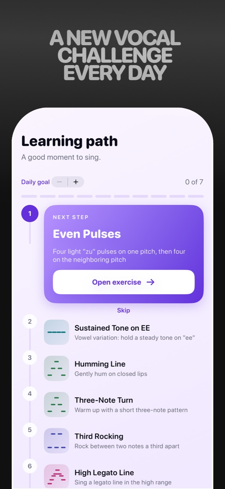

Focus practice
Canu picks out the spot where you get stuck, gives you lead-in notes and then lets you sing the full exercise again.
Canu is your personal vocal coach. Learn to hit notes with confidence, develop your voice and sing more freely. Step by step.
Canu picks out the spot where you get stuck, gives you lead-in notes and then lets you sing the full exercise again.
See which note you are singing and how securely you hit it.
Measure your vocal range live and discover your voice type.
Start with two warm-ups and build a steady routine with changing exercises.
After each exercise, see what improved and which passage to practise next.
Build scales and note sequences, choose notes and tempo, and save them. Canu Boogie comes as a ready-made example to change.
Your practice week on a staff, with practice minutes per day.
Intonation, ear training, agility, articulation, breath control and more.
Change the BPM to slow down a difficult exercise or raise the tempo step by step.
Choose the appearance that suits you, or let it switch automatically.




Your voice develops through practice.
Briefly describe your request. We reply as soon as possible and use your details only to handle your request.
So we can help: please include device, iOS version, app version and a short description of the problem. A screenshot often helps.
Canu needs access to the microphone. Allow it in iPhone Settings under Canu. Practise in a quiet room and keep the microphone clear.
Canu only records when you switch recording on. Recordings stay on your device, and you can delete them in the app. Listening, comparing, saving and sharing are part of Canu Pro.
Purchases run through your Apple ID. On the Pro screen in Canu, tap “Restore subscription”. You manage and cancel the subscription in your Apple ID settings.
Only with your consent: usage data goes to Google Analytics, error reports to Firebase Crashlytics. You switch each off separately in Canu's settings, with “Share usage data” and “Share error reports”. Audio is not transmitted.
Choose the region where you use Canu.